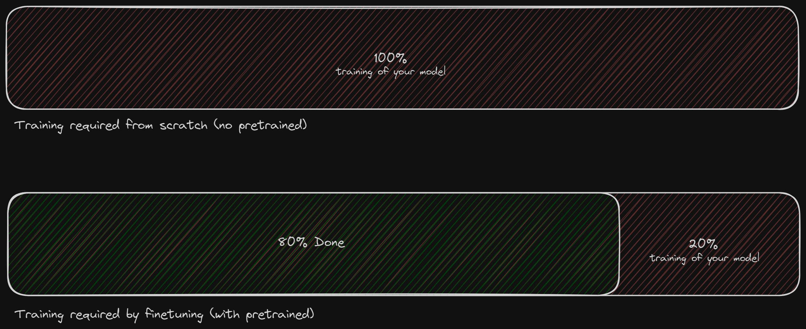
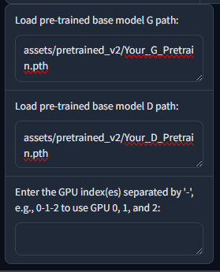
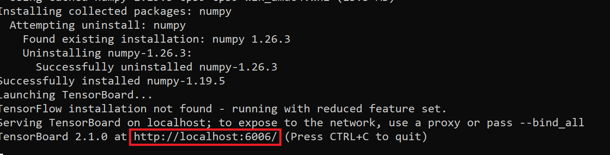
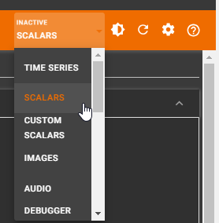
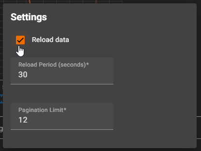
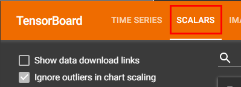
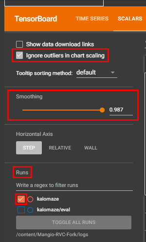
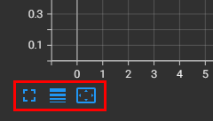
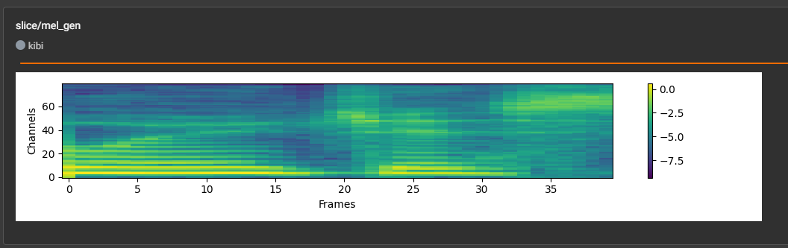
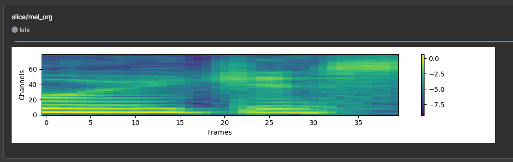

Training
Last update: March 13, 2026
Introduction
In this guide it will be explained how to properly train a model from start to finish.
Properly training a model is just as important as having a great dataset.
It won't be explained how to process a dataset and how to actually train a model since that is different from fork to fork, please look at the guide for your fork to find this info.
Epochs
"Epoch" is a unit of measuring the training cycles of an AI model.
In other words, the amount of times the model went over its dataset and learned from it.
How many epochs should I use for my dataset?
There isn't a way to know the right amount previous to training. It depends on the length, quality and diversity of the dataset.
If you aim towards a quality model, it's not convenient to input a semi-arbitrary amount of epochs, as it makes it prone to losing generalization.
The best way to know when to stop training is to test and hear each saved epoch during the training process. Other tools or "overtrain detectors" are generally unreliable and might end training prematurely.
Do more epochs equal a better model?
No. The pretrain gives the model a wide range of general vocal knowledge. Finetuning focuses that range toward your target voice, but too many epochs narrow it too much.
The model still handles inputs similar to the training data just fine, but anything further outside that range comes out increasingly distorted and robotic. More epochs past the sweet spot means a less flexible model, not a better one.
This phenomenon of the model losing generalization is commonly, but incorrectly, referred to as "overtraining" in the RVC community. True overtraining would actually cause the model to generate pure static on unseen data. This explains why some models trained for 1K+ epochs still technically work, they just become extremely limited.
Batch Size
A batch size is the number of training examples used in one iteration before updating the model's parameters. For 30+ minutes of data batch size 8 is recommended and for less than 30 minutes batch size 4 is recommended.
Smaller batch size:
- Promotes noisier, less stable gradients.
- More suitable when your dataset is small, less diverse or repetitive.
- Can lead to instability / divergence or noisy graphs.
- Generalization might be improved.
Bigger batch size:
- Promotes smoother, more stable gradients.
- Can be beneficial in cases where your dataset is big and diverse.
- Can lead to early generalization loss or flat / 'stuck' graphs.
- Generalization might be worsened.
Be aware that if you're training with 2 GPUs, like in Kaggle's T4x2, the batch size has to be splitted, as each GPU runs the same batch size, for example if you want to train batch size 8, you have to put 4 in the program.
Pretrains
Pretrains are an integral part of making a model, they are basically models that have been trained with many different types of voices, genders, ages, languages, manor of speech and are much longer then normal models. The objective of pretrains is to reduce training time and increase the quality of your model. To make a model without a pretrain you would need several hours of data to make anything decent.

How do I use Pretrains?
Applio
- Go into the training tab and check the 'Custom Pretrained' box and use the drop down to select the pretrain's D and G file.
- If you dont see a pretrain in the dropdown that means you need to download a pretrain, go into the 'Downloads' tab then go to 'Download Pretrained Models' then use the dropdown to select your sample rate and what pretrain you would like to download, then finally click download.
- If you want to upload pretrains manually go into your Applio folder then go to
rvc\models\pretraineds\pretraineds_customand place your D and G files there.
Mainline
- Assuming you have the pretrain you want to use go into your mainline folder then go to
assets\pretrained_v2and place your D and G files there. - Then in the 'Train' tab near the train button you can input the location of your pretrain, replace the ending so it's the name of the pretrain you put in
pretrained_v2.

Where do I find Pretrains?
You can find all of the community made custom pretrains in the pretrain-models channel in AI HUB if you are interested in experimenting.
Keep in mind
In many cases, the original (og) base RVC pretrain could work better than custom ones. Custom pretrains can be somewhat confusing for new users, so sticking to the defaults is generally the safest and best route unless you are looking to experiment.
How do I make Pretrain?
Advanced Topic
Creating pretrains is an advanced process. This information is provided for users who want to experiment, but casual or new users generally do not need to create their own pretrains.
Creating a pretrain is pretty much the same as training a normal model but the dataset is significantly bigger and longer. A bigger dataset for the pretrain equals the best results, regardless of the method you choose.
If you are planning to make a multi-speaker pretrain on Applio, you must follow the Applio-only Multi-Speaker dataset structure to ensure the model learns the different identities correctly.
There are two ways of making a pretrain:
- From scratch: This means you don't use a base pretrain when training. To make a decent from-scratch pretrain, you are going to need a massive dataset (at least 50+ hours of low, mid, and high-quality speech with many different speakers).
- Finetuning: This means you use an existing pretrain to train your new pretrain. You still need a very large dataset of high-quality speech with many speakers. While around 10 hours of data will work, you are going to get a significantly better result by using a much larger dataset.
- The advantage of finetuning is that the training time is much shorter than training from scratch. Only a few epochs are needed for finetunes to be viable as pretrains.
Misc
This section contains miscellaneous information about pretrains.
To make a pretrain you are going to need a pretty good GPU, because without one it will take a very long time to train, people also use multiple ones.
Q: What is the best pretrain?
A: There is no "best pretrain" it all depends on your needs and what you're ok with sacrificing to get those benefits.
Vocoders
- In Applio you are given the choice between two vocoders:
- HiFi-GAN
- RefineGAN
Each of these are different in fidelity and require their own pretrains to use.
Applio might have currently hidden the other vocoders, except HiFi-GAN which is used by default, as the others might be too much experimental and give issues. You could also check the "exp/vocoders" branch.
HiFI-GAN
This is the original vocoder used in RVC, compatible with every realtime and rvc client such as Applio, Mainline, Vonovox and W-Okada.
RefineGAN
Alternative vocoder based on the paper https://arxiv.org/abs/2111.00962. Currently experimental and only compatible with Vonovox and Applio.
Tensorboard
TensorBoard is a tool that allows you to visualize & measure the training of an AI model, through graphs & metrics.
It is mainly useful to see whether there's something weird going on, like the model exploding into NaNs or super high values. It is highly useful when debugging or experimenting with new architectures/pretrains.
Installing & Opening
Applio Users
If you use Applio you don't have to follow these installation steps. Just run run-tensorboard.bat. These installation steps are only for local mainline RVC users.
Download this file & move it inside mainline RVC's folder. Ensure the file path doesn't contain spaces/special characters.
Now execute it. It will open a console window & create some folders inside RVC.
- If you get the
Windows protected your PCissue, click More info & Run anyway.
- If you get the
Once it's done, your default browser should open with TensorBoard app.
- If it doesn't, copy the address of the console at the bottom, and paste it in your browser.
Said address will say "https://localhost" followed by some numbers.

- If it doesn't, copy the address of the console at the bottom, and paste it in your browser.
Usage Guide
SETTING UP
- Open TB & begin training in RVC.
If you get the
No dashboards are activeissue, selectSCALARSin the top right corner dropdown.
First ensure auto-refresh is on, so the graphs update constantly.
Click the gear () in the top left corner & turn on
Reload data.
You can always manually refresh with the refresh symbol (🔄) in the top right.
- Go to the
SCALARStab.

GRAPH NAVIGATION
In the left panel:
Activate
Ignore outliers in chart scaling.Set Smoothing to
0.5if you're training in Applio (because avg 50 graphs are already smoothed, this isn't important info but just a curioisity), or to0.987if you're training in Mainline.Select your model in the
Runssection below. The models you tick will show in the graphs. (untick/evalif you want)

Each graph has three buttons in the corner:
- Left one is for going fullscreen.
- Middle one to disable Y axis, for a fuller view.
- And the right one is to center the view.

To zoom in & out the graphs, press the ALT key + mouse wheel. Remember to center the view after moving around, and after the graph updates.
MONITORING
When checking TensorBoard during training, you generally only need to look out for a few things:
- Check every loss to make sure they are generally going down and do not explode into NaNs (Not a Number) or super high values. In RVC, NaNs mostly happen when you are experimenting with weird architectures/tools.
- Ensure the
kl lossis not negative or too close to being negative. - Keep in mind: The "lowest point" of the
g/totalgraph is not necessarily the best epoch, and the graph going up does not automatically mean the model is losing generalization (the model can get worse before that). - Always test and listen to the epochs manually to accurately find the best one!
Other Graphs
mel loss Spectrogram / Quality:
The mel spectrogram loss compares both the real and synthetic mel spectrograms. This loss encourages the generator to produce audio that sounds similar to the dataset. If the graph is decreasing that shows that the generator is producing audio with similar spectral distribution to the dataset.
You can think of this as clarity / fidelity.
fm loss Feature Matching / Realism:
FM shows how well the generator is able to make synthetic data that has similar features to the dataset. If the graph is decreasing that indicates that the generator is able to make audio that has similar features to the dataset.
You can think of this as how well the model can match timbral, spatial and temporal characteristics.
kl loss Distribution Matching / Acoustic Details:
KL loss keeps the model's internal understanding of audio and features well structured, so the rest of the model can do its job properly. This loss should not be negative or too close to being negative.
d adv Discriminator Loss:
Trains the discriminator. Shows how well the discriminator is able to differentiate between real and generated audio. If the graph is decreasing that means the discriminator is becoming better at distinguishing between real and synthetic data which usually means that the generator is producing realistic audio.
g adv Generator Loss:
Trains the generator to fool the discriminator.
g/total Generator Total Loss:
Every generator loss (everything but d adv) combined.
grad_norm_g Gradient norm for the generator:
grad_norm_g shows the magnitude of gradients during training. If the gradients are becoming too large (over 1,000 for finetuning) that can cause some training instabilities and if they are becoming small that can lead to slow learning.
If you're finetuning it's best if the gradients don't go above 1,000.
grad_norm_d Gradient norm for the discriminator:
grad_norm_d shows the magnitude of gradients during training. If the gradients are becoming too large (over 100 for finetuning) that can cause some training instabilities and if they are becoming small that can lead to slow learning.
If you're finetuning it's best if the gradients don't go above 100.
Mel Images
While looking through the Tensor Board you may come across slice/mel_gen and slice/mel_org.
slice/mel_gen:
Is a mel spectrogram view of audio that the generator created in attempt to make it match mel_org.

slice/mel_org:
Is a mel spectrogram view of audio from your dataset.
